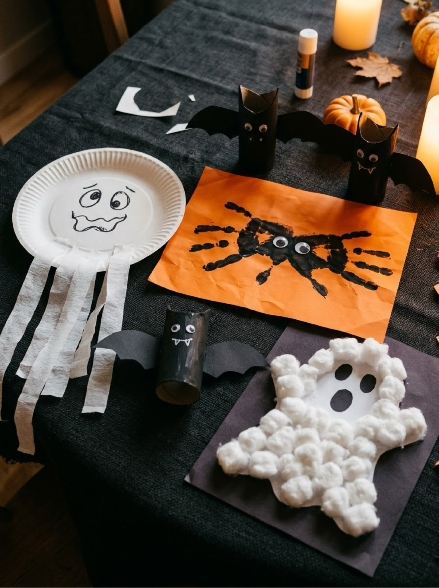
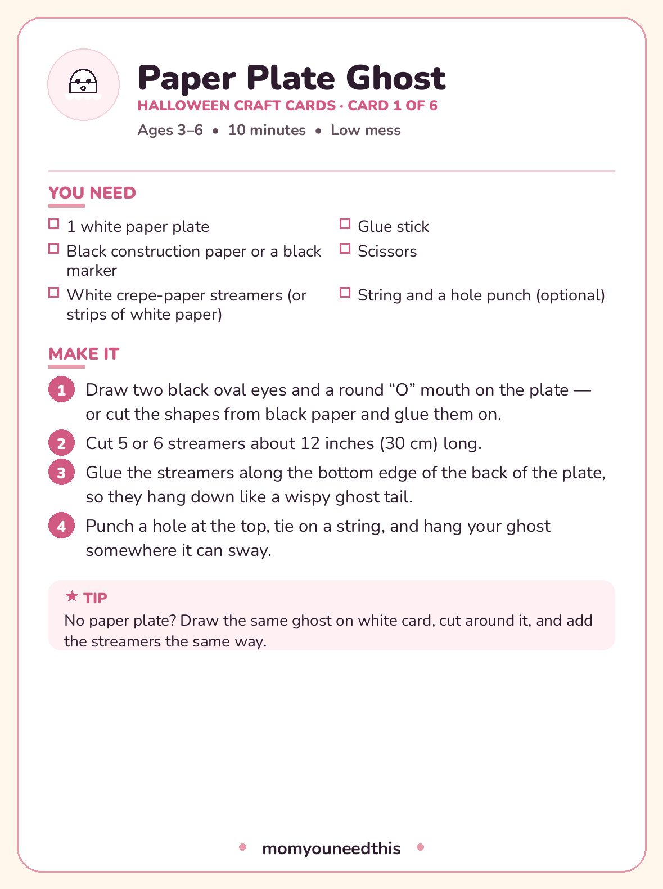

Halloween Crafts for Kids Six not-too-spooky projects for ages 3–6, each with a printable craft card
These Halloween crafts for kids are the ones that survive contact with real preschoolers: six projects for ages 3 to 6 built from paper plates, toilet rolls, egg cartons and cotton balls — no specialty supplies, nothing genuinely scary, and a printable card for every craft so you can work from paper instead of a phone. If you are planning preschool arts and crafts halloween fun at home or in a classroom, start here: pick one craft each, or set up two as stations and let the kids swap.
Last updated: October 21, 2026

Quick Answer
Six crafts, all for ages 3–6 and all made from things you probably already have: a paper plate ghost, a handprint spider, a toilet-roll bat, a pumpkin suncatcher, a cotton-ball ghost and an egg-carton bat. Each one below has its materials list and numbered steps, and all six print as a free card pack. The two crafts that need a grown-up to cut first are clearly marked.
At a Glance
- Ages: 3–6
- What you get: 6 crafts, plus all 6 as printable craft cards in one free PDF
- Time: about 10–15 minutes per craft (two need drying time)
- Cost: Free — built from recycling-bin and craft-drawer basics
👻 Paper Plate Ghost
The friendliest ghost in the pack. A paper plate does all the structural work, the streamers do all the spooky work, and the whole thing sways gently wherever you hang it — which three-year-olds find completely magical. It is also the fastest craft here: ten minutes, start to finish, with no drying time at all.
You need:
- 1 white paper plate
- Black construction paper or a black marker
- White crepe-paper streamers (or strips of white paper)
- Glue stick
- Scissors
- String and a hole punch (optional)
- Draw two black oval eyes and a round “O” mouth on the plate — or cut the shapes from black paper and glue them on.
- Cut 5 or 6 streamers about 12 inches (30 cm) long.
- Glue the streamers along the bottom edge of the back of the plate, so they hang down like a wispy ghost tail.
- Punch a hole at the top, tie on a string, and hang your ghost somewhere it can sway.
🕷️ Handprint Spider
Two handprints, overlapped palm-to-palm with the fingers pointing opposite ways, make a genuinely convincing spider — eight legs and all. It doubles as a keepsake, because those handprints are exactly the size they are this Halloween and never again. Date the back of the card before it goes on the wall.
You need:
- Black washable paint
- White or light-colored card
- Googly eyes (or paper circles)
- Glue
- A paintbrush or foam brush
- Paint your child's palm and four fingers with black paint — leave the thumb clean.
- Press the painted hand onto the card with the fingers spread out, then lift it straight off.
- Turn the card around and press the painted hand down again, so the palms overlap and the fingers point the opposite way. Now your spider has 8 legs!
- When the paint is dry, glue two googly eyes onto the middle, where the palm prints meet.
🦇 Toilet-Roll Bat
The toilet roll is the unsung hero of Halloween crafting. Painted black and folded at the top, it becomes a bat with pointy ears in about fifteen minutes — and a row of them along a windowsill looks like a whole colony moved in. This is the one to make several of.
You need:
- 1 empty toilet roll
- Black paint (or black paper and glue)
- Black construction paper
- Googly eyes
- Glue
- Scissors
- Paint the toilet roll black and let it dry — or wrap it in black paper and glue the edge down.
- Push the top edges of the roll inward from both sides, so the top curves down in the middle and leaves two pointy ears.
- Cut two bat-wing shapes from the black paper.
- Glue one wing to each side of the back of the roll.
- Glue on the googly eyes, and draw two tiny white fangs underneath them.
🎃 Pumpkin Suncatcher
A suncatcher looks impressive and is secretly one of the easiest projects here, because the contact paper does the sticking — no glue, no drips. A grown-up cuts the pumpkin frame first; after that it is all pressing tissue pieces into place, which is deeply satisfying work for small fingers. Hang it in the sunniest window you have.
You need:
- Clear contact paper (sticky-back plastic)
- Orange tissue paper, torn or cut into small pieces
- Black construction paper
- Scissors
- Grown-up step: cut a pumpkin outline frame from the black paper, and stick it onto a square of contact paper, sticky side facing up.
- Press orange tissue pieces inside the pumpkin shape until the whole pumpkin is filled in.
- Add black paper triangles for the eyes and a smile.
- Cover everything with a second square of contact paper to seal it, trim around the pumpkin, and hang it in a sunny window.
👻 Cotton-Ball Ghost
This is the best first craft in the set for the very youngest makers. Stretching cotton balls is wonderful fine-motor practice, the ghost shape forgives every wobble, and the finished picture — a fluffy white ghost on black paper — looks striking no matter how it was assembled. Glue control is the only skill involved.
You need:
- Black construction paper
- Cotton balls
- Glue
- White chalk or a white crayon
- Googly eyes (optional)
- Draw a big ghost outline on the black paper with the white chalk — a rounded top and a wavy bottom.
- Spread glue inside one part of the outline at a time.
- Gently pull the cotton balls apart to stretch them out, then press them onto the glue until the ghost is filled in and fluffy.
- Add two googly eyes — or leave two little black gaps in the cotton as eyes.
🦇 Egg-Carton Bat
Save one egg carton from the recycling and you have three bats waiting to happen. A grown-up cuts the strip of cups; kids paint, scallop the wings (with help), and add the eyes and fangs. Hang a few from a doorway on different lengths of string and you have a bat cave entrance.
You need:
- A cardboard egg carton
- Black paint
- Googly eyes
- Glue
- White paper (for the fangs)
- Scissors
- String (optional)
- Grown-up step: cut one strip of three connected cups from the egg carton.
- Paint the strip black, inside and out, and let it dry.
- Turn the strip so the cups face down. Cut a small wavy scallop into the bottom edge of each end cup — those are the wings.
- Glue googly eyes onto the middle cup, and add two tiny paper fangs.
- Tie a string through the top if you want to hang your bat up.

🎃 Download Your Free Halloween Craft Cards
All six crafts as printable cards — one complete card per craft
⬇️ Download Free Craft Cards 🖨️ Print🎁 Free printable for ages 3–6
🧒 Tips for Crafting with 3- to 6-Year-Olds
Pre-cut anything that needs a grown-up hand before you call the kids over — the suncatcher frame and the egg-carton strip are the two here. A craft that starts with ten minutes of adult scissor work while a preschooler waits is a craft that loses its audience. Set up, then invite.
Paint shirts or old t-shirts solve most mess anxiety, and a damp cloth on the table solves most of the rest. Only two of these six crafts use paint at all — the bats — and both work just as well wrapped in black paper if today is not a paint day.
Finally, plan the display before you start. String across a doorway or window turns six small crafts into a Halloween installation kids will show every visitor, and the ghosts and bats genuinely look better hanging and swaying than they ever will lying on the table.
🎨 More Free Fun for Moms & Kids
🎃 Halloween Bundle
A whole bundle of free Halloween printables — activities, games and more crafts. Get the bundle.
🎨 Crafts for Kids
The craft hub: seasonal packs and projects by material, all with printable cards. Visit the crafts hub.
🍂 Fall Crafts
Five autumn projects that start with a walk outside — leaves, acorns and one good apple. See fall crafts.
🎨 Free Coloring Pages
For the days between crafts: hundreds of free coloring pages. See coloring pages.
❓ Frequently Asked Questions
What age are these Halloween crafts for?
They are made for ages 3 to 6. The cotton-ball ghost and the paper plate ghost suit the youngest makers — mostly pressing and gluing. The two bat crafts involve paint and a little folding, and the suncatcher and egg-carton bat each have one grown-up cutting step before the kids take over.
What supplies do I need for these Halloween crafts?
Mostly things from the recycling bin and craft drawer: a paper plate, an empty toilet roll, an egg carton, black and white paper, cotton balls, clear contact paper, orange tissue paper, black washable paint, googly eyes and glue. Each craft lists its own exact materials, on the page and on its printable card.
Are these crafts good for a classroom or a Halloween party?
Yes — these Halloween crafts for kids were chosen with groups in mind. The suncatcher and cotton-ball ghost are the lowest-mess options for a crowd, and the printable cards mean every table can work from its own instructions. For a party, pre-cut the suncatcher frames and egg-carton strips so the kids start at the fun part.
How long does each Halloween craft take?
About 10 to 15 minutes of making each. The toilet-roll bat and egg-carton bat also need drying time after painting — roughly half an hour depending on how much paint went on — so start those first if you are doing more than one craft in a session.
Can I print the craft instructions?
Yes. All six crafts print free as a card pack — one complete card per craft, with the materials, the numbered steps and a tip on every card. The PDF is designed for US Letter paper and needs no signup.